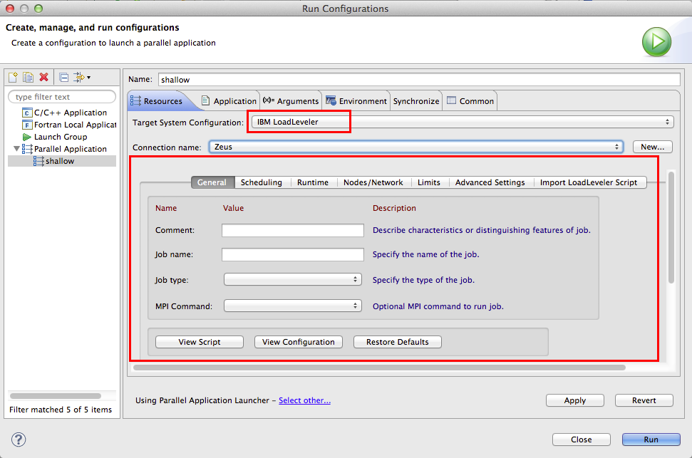

This section describes how to set up a run configuration using IBM LoadLeveler as a PTP target system configuration
As described in Running Parallel Programs, next create a run configuration via Run > Run Configurations ... and create a new Parallel Application.
The specifics for running an IBM LoadLeveler parallel application with PTP are specified on the Resources tab of the run configuration. For Target System Configuration, select IBM LoadLeveler

Then specify a connection. If you have already specified a connection, e.g. for a Synchronized Project or a remote project, it will be selected already. If you are launching a local application (on the same machine where Eclipse is running), select Local for the Connection Type.
See Creating Remote Connections and Local Connections
After selecting IBM LoadLeveler, the Resources tab will be filled with information specific to this target configuration. This area usually (depending on the target system configuration) includes further tabs to segment the other information you can provide. Fill in the IBM LoadLeveler options you need.
To see the information that will be passed, via environment variables etc., to the target system, click on the View Configuration button at the bottom of the Resources tab area.
For Environment variables that don't have a corresponding text field or other way to enter the information in the UI, you can use the Environment tab. For example, to fill in a LoadLeveler reservation id, create a new environment variable by clicking on the New button. Enter the name and value for the variable and click the OK button. The environment variable will be submitted with the job.

Now continue with the run configuration setup for running your parallel application by specifying the Application program on the Application tab, and any other information required.